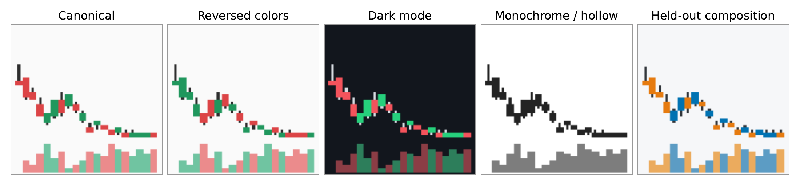
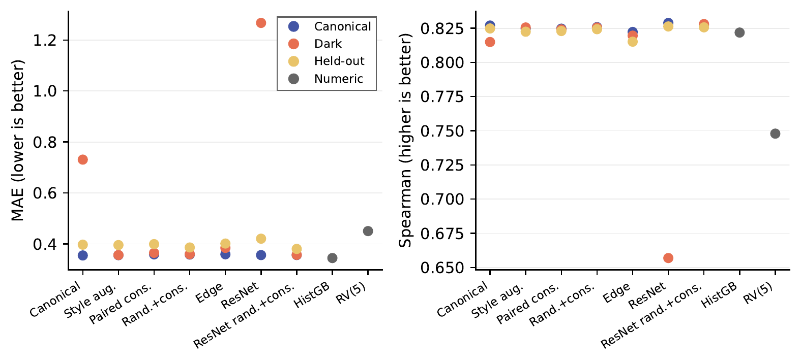
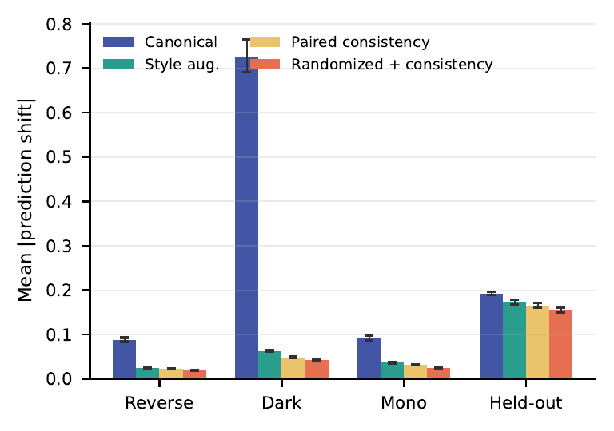
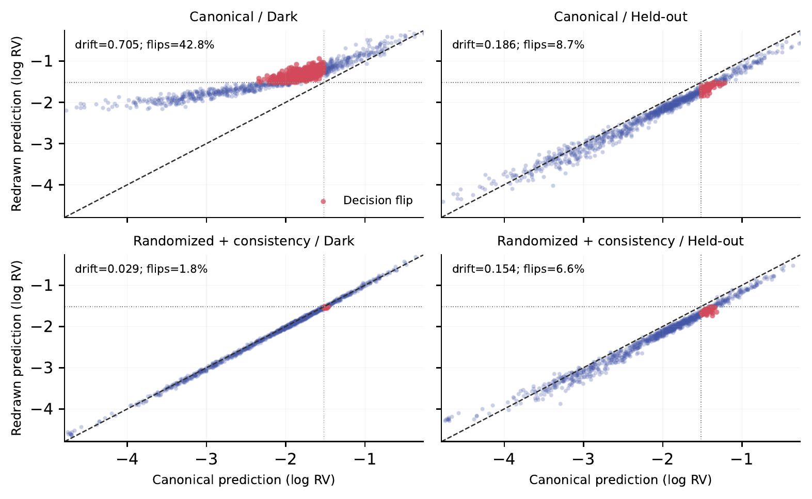

Same Market, Different Pixels: Can Invariance Training Repair Financial Vision Models?
Jeffrey Zhou
California Institute of Technology
Overview
A price chart is not the market. Dark mode, a different color convention, or a charting-library update can change the pixels without changing a single price or volume observation. If an AI model uses those pixels to forecast risk, should its prediction change?
We study small neural networks that forecast next-week volatility from candlestick charts. Rather than compare unrelated light- and dark-chart datasets, we redraw every market window and directly compare its forecasts. This reveals a failure that ordinary forecasting accuracy can miss. We then test whether style augmentation and prediction-consistency training repair it, and how far that repair transfers to unfamiliar charting software.

Task and experimental setup
Each input is a 64 × 64 image containing 20 daily open, high, low, close, and volume observations. The target is log annualized realized volatility over the next five trading sessions: a continuous measure of the size of subsequent price moves. Weekly forecast origins keep the five-session target horizons from overlapping.
The main panel contains 37 exchange-traded funds (ETFs) spanning equities, bonds, commodities, real estate, sectors, and currencies. There are 29,600 fitting examples and 1,036 final-test windows, with 28 test dates per asset in January–July 2026. The model and renderer choices were developed using 2022–2025 outcomes. The protocol was fixed in August before the 2026 outcomes were retrieved and scored. This is a historical holdout, not a forecast issued before those market dates or an independently verified public preregistration.
Charts omit ticker names, dates, and absolute-price labels. Prices use a fixed transformation relative to the first close, rather than stretching every window to fill its own vertical range. This preserves information about the magnitude of price moves. Every paired renderer receives the same adjusted prices and volume observations.
What is compared?
- Canonical training: train on one standard light chart.
- Style augmentation: train on randomly selected light, reversed-color, dark, and monochrome presets.
- Paired consistency: supervise the standard view and penalize prediction disagreement with a second rendering.
- Randomized rendering + consistency: supervise two views, vary their styles and price padding, and penalize disagreement.
The primary convolutional neural network, TinyCNN, has 89,473 trainable parameters. A 381,337-parameter residual network tests whether the result depends on architecture. Other controls include an edge-only image model, grayscale/background normalization, and output calibration. Numerical models receive 111 features using only information available at the forecast origin, from the identical market window. They do not receive additional market information.
Image models are trained for ten epochs with three fixed random seeds. There are no pretrained weights, large language model calls, paid APIs, or external GPU clusters. The study was run on an M4 Pro laptop with 24 GB of unified memory.
Forecast accuracy is not renderer stability
On its native chart style, the canonical TinyCNN has mean absolute error (MAE) of 0.355 in log volatility and Spearman rank correlation of 0.827. Changing only the renderer to dark mode raises its MAE to 0.731. The randomized-consistency model has similar native error, 0.358, and dark-view error of 0.360. Repairing renderer sensitivity does not require a large loss of forecasting accuracy here.

The numerical gradient-boosting baseline achieves 0.345 MAE, slightly better than the native image models, and cannot react to chart cosmetics. The result is not that image models are always preferable. It is that a useful image forecast can still carry an avoidable source of operational instability.
Measuring and repairing prediction drift
Paired drift is the mean absolute change in predicted log volatility between two renderings of the same market window. Alert flips count how often those predictions fall on opposite sides of a fixed high-volatility threshold. The threshold is the fitting targets' 80th percentile; it is not selected using final-test outcomes. Unlike a change in aggregate error, paired drift cannot cancel upward and downward forecast movements.

The headline ensemble results average the three models' forecasts before measuring drift, whereas Figure 3 averages each model's drift. These are different quantities. For the ensemble, dark-view drift falls from 0.705 to 0.029 and alert flips from 42.8% to 1.8%. Its 95th-percentile dark-view shift falls from 1.658 to 0.065, so the improvement also reaches the tail of the forecast changes.

The architecture check gives the same warning. A canonically trained residual network has native MAE of 0.356 but dark-view MAE of 1.267 and 80.1% alert flips. Randomized-consistency training reduces dark-view error to 0.357 and flips to 1.8%. More model capacity does not remove the need to test renderer changes.
Do simpler fixes work?
Grayscale/background normalization converts both chart views to grayscale, accounts for light or dark borders, and normalizes contrast. Affine calibration fits a separate scale and offset for canonical and dark-view predictions using only 2022–2025 data. Neither requires retraining the neural network.
| Method | Drift | Alert flips |
|---|---|---|
| Canonical model | 0.705 | 42.8% |
| + grayscale normalization | 0.062 | 3.0% |
| + affine calibration | 0.242 | 7.6% |
| Randomized + consistency | 0.029 | 1.8% |
Normalization is a strong cheap remedy: its dark-view MAE is 0.359. Consistency training is more stable in this comparison, but the simple fix is useful and should not be dismissed. An edge-only image representation also helps, without making predictions fully invariant.
Independent renderers and the 100-stock check
Testing only our own presets would make the repair look too complete. Three additional chart compositions use two mplfinance themes and one Plotly renderer. They rasterize at 192 pixels before an antialiased downsample, with different candle widths, line widths, and price-to-volume layouts outside the custom renderer family. These are post-protocol stress tests, not part of the original frozen comparison.
| Method | Drift | Alert flips |
|---|---|---|
| Canonical model | 0.543 | 15.3% |
| + grayscale normalization | 0.527 | 14.0% |
| Randomized + consistency | 0.347 | 19.8% |
| + grayscale normalization | 0.407 | 26.3% |
Each row selects its renderer separately by highest mean drift. The flip rate is for that selected renderer, not the maximum flip rate over all renderers. Raw consistency training reduces worst drift by 36.1%, with a 95% calendar-week bootstrap interval of [0.168, 0.227] for the absolute reduction. It does not reduce alert flips at those selected renderers. Adding normalization is not uniformly helpful either. Lower average drift and more stable threshold decisions are distinct goals.
We separately refit the canonical and randomized-consistency models on 100 individual stocks from the contemporary S&P 100 roster. Dark-view drift falls from 0.466 to 0.017, alert flips from 54.0% to 1.4%, and dark-view MAE from 0.516 to 0.363. The 95% calendar-week bootstrap interval for the absolute drift reduction is [0.428, 0.470]. This supports the dark-mode finding beyond the ETF panel, while remaining a post-protocol replication with current-constituent selection and unequal stock histories.
What the study does and does not establish
The practical lesson is to validate chart models with paired redraws, not just one theme's forecasting score. Before an interface or charting library changes, keep a set of structured market windows, render them through both versions, and check forecast drift and alert decisions. Include an untouched renderer in acceptance testing and compare against a numerical model using the same observations.
- Generalization is partial. Three independent compositions do not represent every deployment renderer, and residual drift remains substantial.
- The test has only 28 weekly dates. Uncertainty is clustered by calendar origin, rather than treating all 1,036 ETF windows as independent. The analysis uses 2,000 bootstrap draws.
- The implemented geometry range is narrower than intended. Pixel quantization collapses the planned candle-body-width randomization to one width. Effective continuous randomization varies price padding. The held-out custom padding also lies inside that sampled range.
- Not every redraw is recoverable from pixels alone. Without axis labels or renderer metadata, scale changes can be confused with smaller market moves after rasterization.
- Robustness is not trading performance. The task is daily-bar volatility forecasting, not next-return prediction, microstructure modeling, or transaction-cost-adjusted trading profit.
Code, results, and reproduction
The public repository contains the chart renderers, downloads, model training, analysis, tests, study protocols, and summary CSVs. Full per-renderer and per-seed comparisons and bootstrap summaries are included. Raw provider data, model weights, and individual predictions are not.
Use Python 3.12. After cloning the repository, the basic setup and main experiment are:
python3.12 -m venv .venv
.venv/bin/pip install -r requirements.txt
make test
make download
make study
make analysisThe extension commands are make external-validation,
make stock-replication, and make extension-analysis.
Image training uses Apple Metal Performance Shaders (MPS) when available
and otherwise CPU. External rendering requires Chrome for Kaleido.
Re-downloaded provider data and current stock constituents can differ
from the recorded retrieval manifests. Generated data, weights, and
predictions stay local and are ignored by Git. See the
README
for the pipeline and the
protocol files
for the exact settings.
Citation
Jeffrey Zhou. 2026. Same Market, Different Pixels: Can Invariance Training Repair Financial Vision Models? ICAIF 2026.